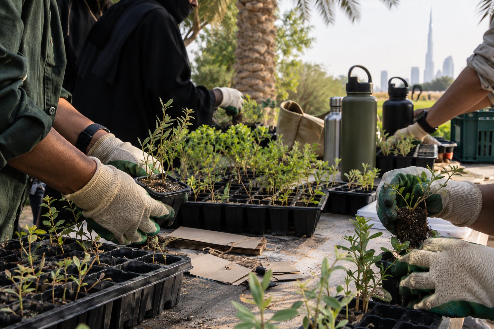

Hi — I can use live LUNARIS tools when they are available, and I will label estimates and missing data. What would you like to understand?
POSTCARD 01 · DUBAI · LOCAL TIME
Your city,
in its element.
A quieter way to find the moments that feel like yours.
FORECAST
—°
Checking source…
FOR YOUR WEATHER
The day has
better hours.
Forecast windows appear only when the weather source responds.
Retrieving Dubai’s hourly forecast…
MEET LUMI · YOUR FIELD GUIDE
Small steps.
Clear receipts.
I’ll help you read the forecast, compare a choice, and find an official route into local action. No points for pretending.
Ask LumiGroq conversation · evidence tools · local fallback
Ask about Dubai weather, activity timing, lower-impact choices, sourced venues, NASA POWER evidence or city action. Lumi uses a secure server-side AI service when configured and falls back to the bounded local guide when it is unavailable.
Conversation history stays in this browser tab and is sent only for the current response. Do not share sensitive personal information. Lumi is not a medical, emergency or professional safety authority.
COP31 / ACTION & RESILIENCE LABA city worth protecting.
A city worth protecting.
People worth protecting.
Explore Action Atlas scenarios, a construction-worker heat-safety prototype, a manual carbon wallet, climate-proof home checklist, food-waste planning and insurance education. Assumptions and evidence status are explicit.
Enter the guided experience ↗
FIELD NOTE · ATMOSPHERE JOURNAL
Shade is a destination, too.
ONE SMALLER CHOICE
Same distance.
Different trace.
Compare transport modes using a distance you provide. No invented route, timing or street-level claim.
NEW / CLIMATE INSURANCERisk is more than a forecast. Understand the coverage questions that matter.Open Climate Insurance Guide →
LUNARIS EXPLORE · SOURCE-ATTRIBUTED DISCOVERY
Good for your day.
Mindful of tomorrow.
Explore real Dubai venues with documented practices or official tourism sustainability recognition. We show the evidence—not an invented eco-score. Check opening hours and venue conditions before visiting.
EXPLORE / EVIDENCE FIRST
Places with a story worth checking.
Named venues are real; the evidence is linked. No live hours, inventory, indoor temperature, verified cafe emissions, or formal LUNARIS endorsement is implied.
Environmental evidence is a reported practice or a tourism sustainability award, not a comparative carbon footprint. Information may change. Dubai Sustainable Tourism Stamp recognitions shown are from the published 2025 cycle, announced in 2026.
DUBAI JOURNAL · MOODS AND MOMENTS
01 · SHADE STUDY
The architecture of a slower morning
Editorial concept · venue details pending source review
Let the city cool before you move.
Open HeatShield for sourced conditions before planning outdoor time.
A quiet hour, held in reserve.
Curated category preview
HEATSHIELD · FORECAST COMPARISON
Choose the hour,
not the hazard.
Ranks forecast hours against your personal comfort range. It is not medical advice and never labels a time “safe.”
PLAN YOUR ACTIVITY · DECISION ASSISTANTTell LUNARIS what you're planning.
Waiting for Open-Meteo forecast
AI model evaluation is not yet connected. Live Open-Meteo forecasts remain source-labeled.
No forecast windows yet.
◈Carbon & Cost WalletMoney × emissions♧FoodPrint · Fridge BrainUse what you have⌂WattFlow · Home ResiliencePrepare your home◇Climate Insurance GuideUnderstand coverage
CHOICES · ESTIMATES WITH RECEIPTS
Trade-offs,
made tangible.
01 / TRAVELA distance in.
A distance in.
A clearer choice out.
Factor-based comparison only. No route, transit schedule or journey time is inferred.
YOUR VEHICLE · MORE PERSONAL
Compare using your car's real efficiency
Choose the powertrain and enter the manufacturer's documented combined-cycle efficiency. The result is an operational estimate, not the vehicle's full lifecycle footprint.
Enter a model's published efficiency to estimate driving emissions.
Uses illustrative fuel CO₂ factors (petrol 2.31 kg/L, diesel 2.68 kg/L). For EVs, provide your electricity-grid factor rather than assuming zero emissions. These estimates omit production, fuel upstream stages and model-specific real-world driving conditions.
Verified against the UK Government 2026 conversion-factor workbook: average fuel-unknown car 0.16591 kg CO₂e/vehicle-km, average local bus 0.10151 kg CO₂e/passenger-km, and London Underground 0.02121 kg CO₂e/passenger-km used as a transparent rail proxy. These are not Dubai fleet factors. Walk/cycle show zero operational emissions here, not zero lifecycle impact.
02 / FOODCompare categories,
Compare categories,
not people.
Lifecycle averages are broad estimates, never a product or restaurant footprint.
Choose two categories to see an attributed comparison.
FOODPRINT · NEWLess food wasted. More value from every ingredient.Open Fridge Brain →
FOODPRINT / PRODUCT INTELLIGENCE BETA
Keep the food. Compare the brands.
Find a specific packaged product by barcode, then compare two published product footprints only when they use the same unit and system boundary. We never invent a brand's emissions.
Product identity data supplied by Open Food Facts when available. An Eco-Score is not equivalent to a verified product carbon footprint.
Compare two packaged products
Barcode identity and ingredients can help identify alternatives. Neither product receives a claimed carbon advantage without comparable footprint evidence.
Brand and ingredient information will appear if found. Carbon footprint comparison requires separate source evidence.
Compare two published footprints
Both values must describe equivalent product mass and the same declared boundary. These inputs are supplied by you, not independently verified by LUNARIS.
Different dates, origins, packaging, functional units or assessment methods can invalidate comparison even with the same boundary. Check each publication. Example of a manufacturer publishing methodology (Oatly) · Open Food Facts.
Global lifecycle averages in kg CO₂e per kg of food from Our World in Data’s Poore & Nemecek (2018) dataset. Values include land-use change, farm, feed, processing, transport, retail and packaging; production varies widely.
03 / ENERGYYour monthly use.
Your monthly use.
The current tariff.
A transparent DEWA residential electricity estimate using published slab rates, the November 2026 fuel surcharge and VAT.
Enter monthly kWh to estimate the electricity component of a DEWA bill.
WATTFLOW / WHAT-IF PLANNER
What if you used less electricity?
Estimate a reduction against your entered monthly usage. It does not infer how you would achieve it.
WATTFLOW · NEWEnergy efficiency meets household climate resilience.Open Home Resilience Checklist →
WATTFLOW / APPLIANCE SCENARIO
Where could the electricity go?
Enter appliance wattage and usage hours to estimate consumption and the potential bill effect of changing a habit. Wattage is user-provided: not a smart meter measurement.
Estimate energy use and marginal tariff savings. Variable-speed AC and actual duty cycles can differ substantially from rated input.
Official DEWA residential electricity slabs: AED 0.23, 0.28, 0.32 and 0.38 per kWh; November 2026 fuel surcharge AED 0.06/kWh; 5% VAT. Meter charges, housing fees, water, sewerage and other line items are excluded.

OFFICIAL ROUTES · LIVE LINKSA better city
A better city
begins with
showing up.
THE MAIN EVENT · DUBAI CITY INTELLIGENCE
See the city. Spot possibility.
Open the interactive Atlas: 12 area-level investigation concepts spanning heat, greenery, biodiversity, water, solar and waste. Examine interventions, explore hypothetical impact and register interest. Satellite evidence has not yet validated specific sites.
Enter the City Opportunity Atlas ↗VOLUNTEERING · UNITED ARAB EMIRATES
Explore Dubai’s improvement potential
Explore area-level urban cooling, greenery, biodiversity, water, energy and waste concepts in the new City Opportunity Atlas. All mapped concepts require satellite assessment, local surveys and approvals. Real volunteering routes are separately linked below.
- Opportunities
- Provider-managed
- Registration
- On official platform
- LUNARIS tracking
- None
Open Dubai Opportunity Atlas ↗Browse Volunteers.ae ↗Read Dubai’s volunteering guide →
External links open the official provider. Availability and eligibility are determined there.
IMPACT · A QUIET LEDGER
No score.
Just a record.
Factor-based estimates and official-route visits stay clearly labeled. They are never collapsed into a fictional goodness number.
0Estimated
0Official routes
0Verified outcomes
✦
Your ledger is open.
Run a sourced comparison to keep a private, browser-only record here.
YOUR DATA / YOUR CONTROL
Your activity ledger is stored in this browser. If an API is available, preferences and conceptual mission interest may also be associated with a temporary guest session. You can erase both here.